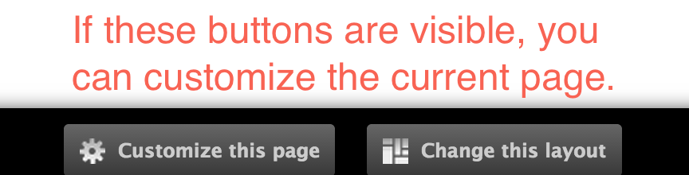
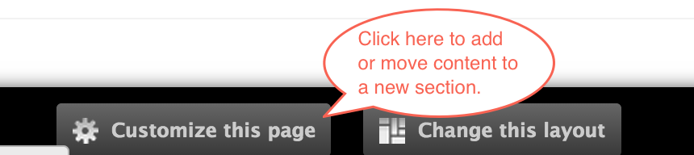
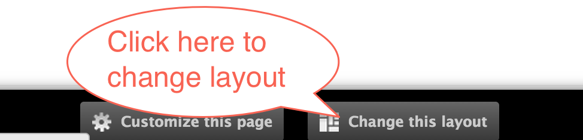
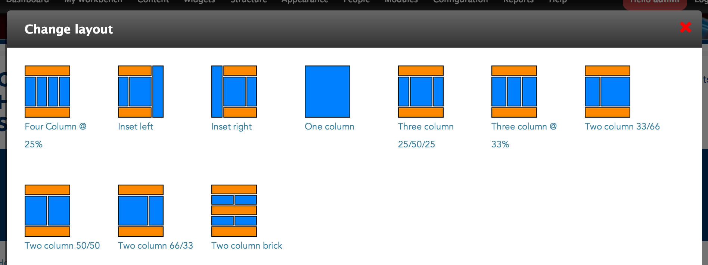

Most pages that you find on the site can be customized. Reusable content can be added, removed, or assigned to different regions of a page.
In order to determine if a page can be customized, look for the buttons Customize this page and Change this layout located on the bottom of the page.

Click Customize this page to update the content located on this page.

Depending on a page's layout, there could be many sections of a page: Top, bottom, left, right and middle. It's not uncommon to see a left below or right below section as well.
Located at the top right of each section are two buttons with two specific purposes:
The paint brush controls the style of the section.
The add/plus sign lets you add content to the section.

Only certain content can be added to sections of a page. Reusable content such as blocks, widgets, images, etc are examples of reusable content. If you created a piece of content on the site, chances are you can add it to a section in a page.
Clicking the add/plus sign allows you to add content to a section. Content is categorized based on type. In most cases, Blocks and Miscellaneous type content will be the main categories you will be searching for content.
At the bottom of the page, click Change this layout.

If you are able to update the layout, there will be some additional layout options to choose from.
Select the one you want by clicking on it.

Because your layout has changed, you will have to go into Customize this page in order to move content around to their new section.
Created on January 9, 2014
Last modified on January 13, 2014
Authored by Gray Sadler